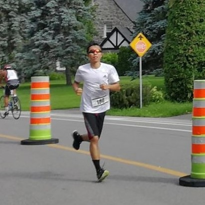

La CourseClimatique est un mouvement où des individus courent, nagent et pédalent à vélo pour sensibiliser le public aux changements climatiques.
Notre but est d'accumuler une distance collective de 40 000 km avec but de donner 10$ par kilomètre parcouru. Une fois ce but achevé, nous organiserons un événement pour verser les fonds recueillis pour soutenir des projets humanitaires qui aident les désastres climatiques.
La CourseClimatique est à but non lucratif.
Vous demandez des genes pour donner pour les efforts d'aide humanitaire dans des zones de climat extrême.
Pour chaque 10$ que vous recevez, vous leur promettez de nager 500 m, courrir 1 km ou de pédaler 10 km à vélo.
Les fonds seront donnés à des organismes sociaux pour aider les victimes de désastres climatiques. Vous pouvez consulter notre GoFundMe pour comment donner.
Vous pouvez courrir et recueillir des fonds pour la sensibilisation des changements climatiques! Faites juste remplir ce formulaire pour vous-y inscrire!
Ensuite, veuillez partager notre GoFundMe pour encourager des dons pour les victimes des désastres climatiques.
Finalement, dès que vous aurez complété votre distance, veuillez nous transmettre une preuve de votre course (un photo de votre trajet avec votre distance ou tout autre preuve) à notre adresse courriel race4climate@gmail.com
N'oubliez pas de partager vos moments de course avec #courseclimatique.
Vous pouvez soutenir notre GoFundMe officiel (cliquez ici!) pour les victimes de désastres climatiques en collaboration avec des organismes sociaux.
Vous décidez à quel moment de courrir, mais nous vous suggérons de le faire le plus tôt possible pour créer un mouvement pour le climat.
Toute distance est bienvenue, que ce soit un 3km ou un IRONMAN 70.3 (comme fait Laurence (voir en bas)). Nous vous suggérons de fixer un but pour votre course, comme 10$ par kilomètre couru à pied..
La CourseClimatique a commencé en août 2019 quand un jeune de 17 ans a décidé de courrir un IRONMAN 70.3 le 7 septembre pour sensibiliser le public aux désastres causés par les changement climatiques.
Ce mouvement a ensuite été adopté par des participants de tout niveaux et origines, avec le but ultime d'assurer une réponse rapide aux cataclysmes causés par les changement climatiques et de soutenir les mouvements environnementalistes à travers la planète.
Race4Climate/CourseClimatique
Email: race4climate@gmail.com
Facebook: Race4Climate
Laurence Liang (l'adolescent de 17 ans qui a initié ce mouvement)
Email: laurencel2001@gmail.com
Facebook: Laurence Liang
LinkedIn: Laurence Liang